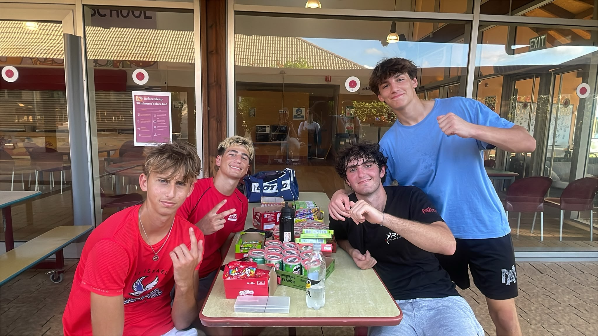
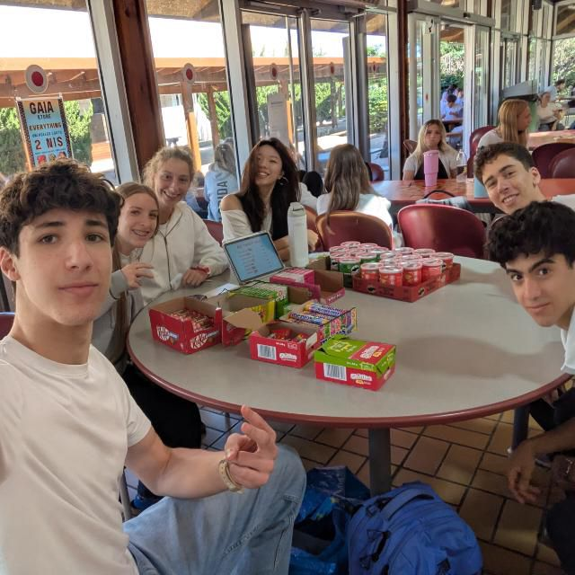

Candy Stall
Our lunchtime candy stall: we sold candy to students at lunch and raised ₪350 for the club.
Founded 2025 • Student-Led • AIS
ACC — AIS Charity Connections is the student charity club at the Walworth Barbour American International School (WBAIS) in Even Yehuda, Israel. We turn school fundraisers into real donations for charities across Israel.

Who We Are
ACC was founded in 2025 by seniors at the Walworth Barbour American International School (WBAIS) in Even Yehuda, Israel, who wanted students to do more than talk about helping — they wanted to organise it. When they graduated, the club was handed over to the current team, who have carried it on since.
More about ACC →Featured Fundraiser

Our lunchtime candy stall: we sold candy to students at lunch and raised ₪350 for the club.